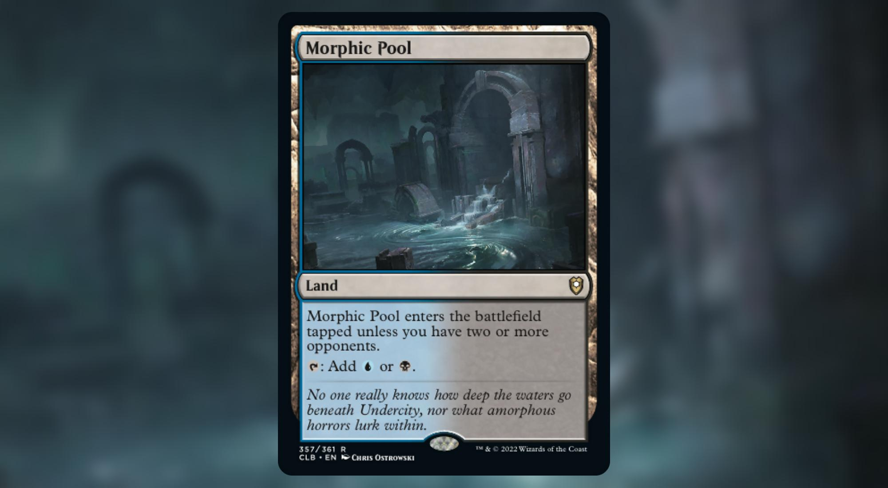

Best Dimir lands
Top 10 mana fixing Dimir lands for your Commander deck
Building a 2 colors Commander deck is always tricky. Compared to the other configurations (1 color and 3+ colors), 2 colors decks have less ways of fixing their manabase than other combinations.
That's why it's particularly important to know what your options are if you want to make the most out of your manabase.
10. Drowned Catacomb
Flexible enough that you can probably keep a hand with another land and be good to go.
9. Tainted Isle
Will shine more in decks relying heavily on Black. Will provide colorless mana in the meantime.
8. Darkwater Catacombs
You cannot keep your hand if this is your only land, other than that, you are good to go.
7. Clearwater Pathway // Murkwater Pathway
Doesn't really fix your mana but at least you get to choose your color.
6. Sunken Ruins
Instant speed fixing for both of your colors if you happen to already have one of those two colors. Provides you colorless mana in the meantime.
5. Underground River
Instant speed fixing for your deck with a 1 life drawback each time. Won't hurt you if you don't need the colored mana.
4. Morphic Pool

No drawback in a Commander game other than not being fetchable.
3. Watery Grave
Almost as good as it's older brother, Underground Sea.
Prefered target when cracking an Polluted Delta if you have no relevant play to follow with.
2. Underground Sea
The king of dual lands: Perfect, no drawback, no tempo loss.
I only ranked Polluted Delta higher because of the amazing flexibility.
1. Polluted Delta
This is the perfect land for your Dimir Commander deck.
It's a Swamp when you need it. It's an Island when you need it. If your budget allows it, it can be a Underground Sea at instant speed. If you have nothing else to play, it can be a Watery Grave that enters the battlefield tapped.
You should always wait until the last minute to crack your fetch land: if you need to play Vampiric Tutor or Dispel at instant speed, just go fetch a Underground Sea, otherwise, at the end of your opponent's turn, go fetch a Watery Grave and let it enter the battlefield tapped.
Cracking a fetch land and shuffling your library is also what makes it so good. If for whatever reason, you're not happy with your scry, or the cards you put back on top of your library with a Scroll Rack or Brainstorm, you can get rid of them by cracking the Polluted Delta.
Fetch lands are also good targets for recursion spells or abilities like Crucible of Worlds.
You can also double your fetch land activations with cards like Rings of Brighthearth.